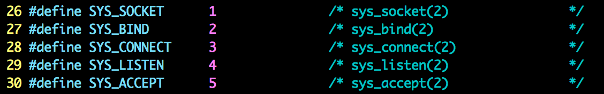
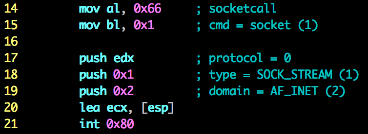
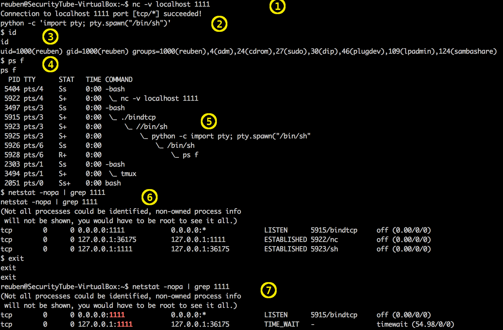
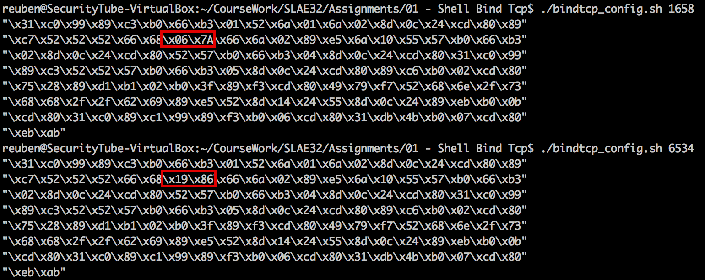

Assignment 1 – Shell bind tcp
This blog post has been created for completing the requirements of the SecurityTube Linux Assembly Expert certification: http://securitytube-training.com/online-courses/securitytube-linux-assembly-expert/
Student ID: SLAE-510
Requirements
For the first assignment it is required to create a shellcode which binds to a port, and executes a shell on the incoming connection. The port should also be easily configured.
Extra challenges
As an extra challenge to myself, I decided to make the shellcode listen for an incoming connection, fork a child which spawns a shell, make the parent wait for the child process to finish. After the child process finishes, the should start listening for another connection. This should continue running until the parent process is killed.
Implementation
So let’s start with a run through of what system calls are required for this challenge.
- socket – creates an endpoint for communication
- bind – binds the address and port to the socket
- listen – listens for connection on the socket
- accept – accepts a connection on the socket
- fork – create a child process by copying the parent
- dup2 – duplicate file descriptors, used to redirect streams
- execve – execute a program, in this case a shell
- close – close file descriptor, used to close new connection’s socket from the parent
- waitpid – wait for the child process to exit
The socket related calls are multiplexed through one system call called socketcall. This means that socket, bind, listen and accept will have the same system call number (102). I found this blog post very helpful in understanding how socketcall works.
Socketcall system calls require two parameters: the first one is the socket call number and the second one is an array of parameters required for the particular socket call number. The first parameter is defined in /usr/include/linux/net.h

{kind=link}
The second parameter is an array of values for the particular socketcall. For example for the socket call, we would need to create an array of 3, with the domain, type and protocol.
So let’s look at one particular instance of how to use this. In order to call the socket system call(to create the endpoint), we need to set
- $eax = 102(socketcall syscall)
- $ebx = 1(socket)
- $ecx = { .domain = 2(AF_INET), .type = 1(SOCK_STREAM), .protocol = 0 }
In create the array above, we can push the 3 values(in reverse order) on the stack and take the address of the stack pointer.

{kind=link}
After the above procedure was done for the socket, bind, listen and accept calls was done, I added the fork. The fork system call creates a child process using a copy of the parent process. This means that both the parent and child process will have the same process layout and cpu state. However the return code of the fork system call differs from the parent to the child process. The parent process gets the child pid in the $eax while the child process gets 0 in $eax. This allows us to chose what to do next if we are the parent or the child process.
In the parent process, the accepted client connection(which is going to be dealt with by the child) is closed. Then the parent waits on the child process to finish by using the waitpid system call. This allows for a continual access to the system. However I decided to limit it to serving one connection at a time. That is why I made the parent process wait for the child process to exit.
For the child process, in order for the connected client to be able to control the shell we are about to launch, we need to redirect the standard input, output and error streams to the client socket. These 3 streams are available as file descriptors 0, 1 and 2 respectively. This can be done by using the dup2 system call on these 3 file descriptors. What this does is, it closes the 3 file descriptors and uses the client socket instead. After the dup2, all we need to do is call execve on /bin/sh.
Testing
After the implementation of this assignment let’s have a look at the shellcode running. Let’s start analysing the annotations in the below image.

{kind=link}
The first annotation (1) shows the established connection to the running shellcode which is listening on port 1111. Just for identifying inputs from the outputs I spawned a tty shell. This can be achieved by using something like python -c 'import pty; pty.spawn("/bin/sh")' as shown in the second annotation(2). The third note (3) is for checking the id of the user running the process. Notes (4) and (5) show the process listing. There is a lot we can see here. The first thing we can see is the connection from the nc command. Secondly we can see the bindtcp shellcode running and the //bin/sh shell running as a child of the bindtcp. We can also see the extra tty shell I spawned using the python snippet described above. The sixth note(6) shows the connections on port 1111. The bindtcp process is the one LISTENING on port 1111. Then we can see the nc client connected and the /bin/sh child of the bindtcp connection endpoints. Finally after a full disconnection from the client I wanted to check whether the bindtcp process was still running. So I check the connections using the netstat command. As can be seen in the last note (7), the bindtcp is still listening on port 1111 and we can see the TIMEWAIT of the previous connection still there. These show that the shellcode is working as expected.
As an extra incentive to learn how to use libemu, I tried analysing the code I wrote using libemu. One of the things I noticed is that libemu doesn’t handle fork very well as after the fork the graph continues as if it is all the same process. This can also be seen after the execve of the child process. The graph links to the code that is run by the parent as if the child continues to run this after it exits from execve.
 libemu graph of the bindtcp shellcode
libemu graph of the bindtcp shellcode
Port customisation
To fulfil the last requirement, that is to make the port number easily customisable, I created a bash script bindtcp_config.sh which accepts the port number as the first argument. It then outputs the shellcode to the screen. The only limitation with this script is that it does not check whether the given port would result in the shellcode containing null bytes. As such the user would be required to manually check the output of the script for null bytes. Should the user wish to use this particular port, an encoder which gets rid of the null character should be used.
This script uses a file(also available on GitHub) I created using one of my scripts. (If you want to read more about the scripts I used to help me in writing these assignments, read this blog post.) The file is bindtcp_conf.shell. This contains the shellcode with the two bytes for the port number changed to PORTPORT. The bindtcp_config.sh script replaces the PORTPORT with the correct format of the port number provided.

{kind=link}
The full code for this assignment, shell script and extra files needed can be found on my GitHub account.